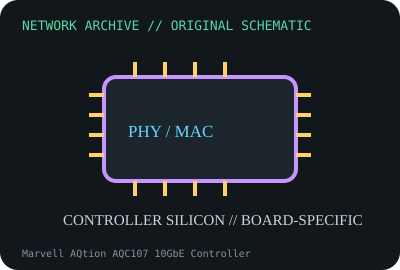

[ MODEL-SPECIFIC NETWORK HARDWARE ]
Marvell AQtion AQC107 10GbE Controller
Single-port multigigabit 10GBASE-T controller for NICs and motherboard LAN. Confirm exact product label and revision before applying specifications.

IDENTIFICATION: Confirm manufacturer PID, hardware revision, device ID or module suffix. Nominal standards/link rates are not measurements of payload performance.
Exact specifications and compatibility
| Dedicated subcategory | Ethernet controllers and PHYs |
|---|---|
| Exact product/model | Marvell AQtion AQC107 10GbE Controller |
| Bus, ports and physical interface | PCIe 3.0 host bus (lane allocation board-dependent); external magnetics and RJ-45 are board-specific. |
| PHY, radio or protocol | AQtion AQC107 supports 10/5/2.5/1/0.1GbE NBASE-T rates and includes MAC/PHY functions in supported designs. |
| Nominal rate (not measured) | Up to 10Gb/s nominal line rate on a designed board; not a measured throughput claim. |
| Measured throughput | No measured benchmark is claimed for a physical specimen. A valid result must record host/peer, link partner, media/cable, driver/firmware, traffic pattern, test tool and duration. |
| Drivers, OS and firmware | Marvell/Aquantia atlantic Linux driver support and board OEM Windows packages depend on revision and PCI ID; motherboard firmware matters. |
| Compatibility | This IC needs a completed board, thermal design, clocking and analog front end; it is not interchangeable with AQC113/AQC111C solely by function. |
| Variant warning | AQC107 chip, ASUS XG-C100C and QNAP cards using related controllers are distinct products; inspect marking and revision before assuming driver or layout. |
Model and revision notes
AQC107 chip, ASUS XG-C100C and QNAP cards using related controllers are distinct products; inspect marking and revision before assuming driver or layout.
Marvell/Aquantia atlantic Linux driver support and board OEM Windows packages depend on revision and PCI ID; motherboard firmware matters.
This IC needs a completed board, thermal design, clocking and analog front end; it is not interchangeable with AQC113/AQC111C solely by function.
Archival, ESD and preservation notes
Record top mark/lot, host board and thermal interface. Use conductive ESD carrier; avoid attempting chip swaps without board-level rework records.
Document source URL, access date, document revision and specimen label/condition. Preserve without credentials or private configuration.
Primary manufacturer and standards sources
- Marvell AQtion Ethernet controller product portfolioPrimary manufacturer or standards documentation; verify exact SKU and host revision.
- Linux kernel atlantic driver documentationPrimary manufacturer or standards documentation; verify exact SKU and host revision.
- IEEE 802.3 Ethernet standardsPrimary manufacturer or standards documentation; verify exact SKU and host revision.
Manufacturer statements cover the named part or its documented product family; the exact labeled revision and vendor compatibility list take precedence.